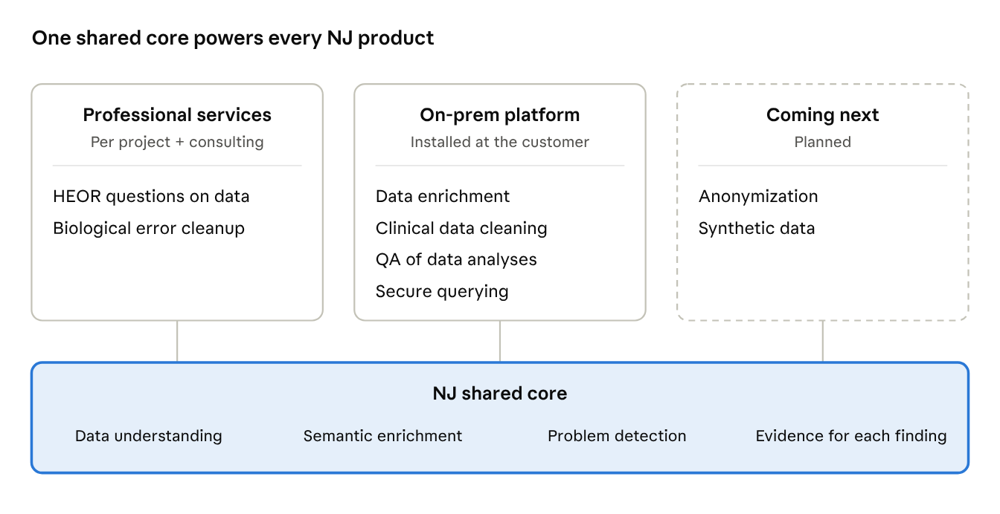
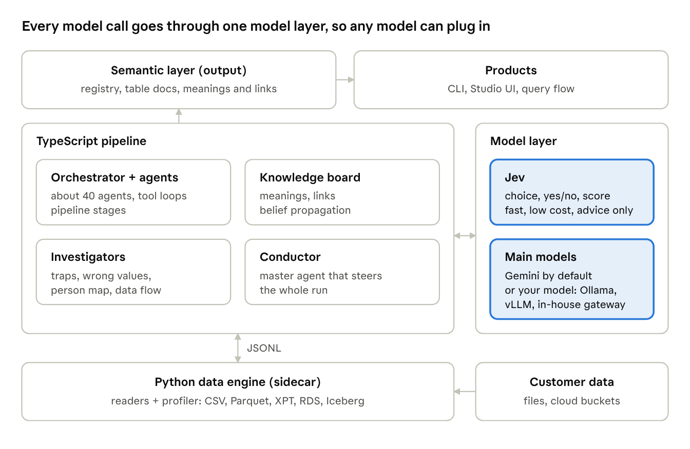

Natural Joints (NJ): Products and Platform
2026-11-17 · Ran Tene
Summary
Natural Joints (NJ) is a semantic layer for low-signal data: tables with no documentation, unclear codes and meaning that is hard to see. NJ builds its understanding in layers, and every finding comes with evidence:
Column meanings: what each column holds, its units and its codes.
Table relations: how tables link, and which rows describe the same patient or sample.
Experiment understanding: the study design, the biology behind the data, and the errors that break it.
Patient timelines: each patient's events in order, across all tables.
Every NJ product is built on these same layers. Five run today: data cleaning and enrichment, clinical trial data cleaning, HEOR questions on data, QA of data analyses, and querying data without exposing it. Anonymization and synthetic data are planned.
The shared core
All products are built on one core: data understanding, semantic enrichment, problem detection and evidence.

Product map
Four of the seven products have "very high" business potential: clinical trial data cleaning, HEOR, QA and secure querying.
| # | Product | Pain | Daily user | Buyer | Drug stage | Potential | NJ status / sales model | Proof |
|---|---|---|---|---|---|---|---|---|
| 1 | Data cleaning and enrichment | Undocumented data, inconsistent values, unclear codes, errors, duplicates | Data Engineers, Data Stewards | CDO, VP Data, Head of Data Engineering | All stages | High | Part of the existing platform; includes clinical data | Semantic Enricher Benchmark; HeurekaBench-Lite |
| 2 | Clinical trial data cleaning | Missing values, conflicts between tables, protocol deviations, issues before database lock | Clinical Data Managers, Clinical Data Scientists | Head of Clinical Data Management, VP Clinical Operations | Phase I–III, before database lock | Very high | Part of the platform; uses semantic enrichment, conflict and trap detection | Needs its own validation on clinical trial data |
| 3 | HEOR questions on data | Slow answers, cohort building, research analyses | HEOR Analysts, RWE Scientists, Epidemiologists | Head of HEOR, Head of RWE, VP Market Access | Phase III, market access, post-marketing | Very high | Two models: (a) service with scientific consulting and analysis; (b) on-prem platform | 24-question benchmark: 50% → 92% accuracy with NJ |
| 4 | QA of data analyses | Errors in code, filters, variables and statistics that lead to wrong conclusions | Biostatisticians, Statistical Programmers | VP Biometrics, Head of Biostatistics, Head of Clinical Quality | Preclinical, Phase I–IV, regulatory | Very high | On-prem platform; scans data, code and research documents, finds errors, shows evidence | Nature Medicine 2024; Nature Genetics 2025; DeepCDR |
| 5 | Anonymization | Exposure of personal and sensitive data, limits on sharing and use | Data Engineers, Privacy Officers | CDO, CIO, Chief Privacy Officer, DPO | All stages | Medium–high | Not built; can be built on NJ capabilities | None yet |
| 6 | Synthetic data | Hard to share real data; not enough data for model training and testing | AI/ML Engineers, Data Scientists | VP Data Science, Head of AI/ML, CDO | Discovery, preclinical, clinical development | High | Not built; can use NJ's understanding of structure, meaning and table links | None yet |
| 7 | Querying data without exposing it | Using an LLM on sensitive data without showing raw values to the model | HEOR, RWE, Clinical Data Scientists, Biostatisticians | CIO, CTO, CDO, VP Data & Analytics | All stages | Very high | Positive experiment: an LLM queried data through the semantic layer without seeing the data | Text-to-SQL on MSK-MET: 130 questions, all correct |
Evidence
NJ has found real errors in published studies and has raised accuracy on data-question benchmarks.
Errors in published research. In a Nature Medicine 2024 study, NJ found 15 issues, including a resampling bug that made confidence intervals about 11.8% too narrow. In a Nature Genetics 2025 NSCLC study, it found a day-to-month error that turned a 2-year PFS cap into about 17.4 months. In DeepCDR, it found wrong drug IDs for Cisplatin.
Better answers on data questions. On a 24-question benchmark, accuracy rose from 12 of 24 to 22 of 24 with NJ. On HeurekaBench-Lite, NJ answered 17 of 18 correctly.
Querying without exposing data. On MSK-MET, a model answered 130 questions through the semantic layer without direct access to the tables.
Architecture
NJ is a TypeScript pipeline on top of a Python data engine. Every model call goes through one model layer, so a customer can bring its own model (BYOM). Jev answers the many small closed questions fast and at low cost.

BYOM is one setting. It points every model call at an endpoint the customer runs: Ollama, vLLM, LM Studio, llama.cpp or an in-house gateway. Both the OpenAI-compatible and the Google protocol work. Nothing else in the code calls a model provider.
On-prem deployment
The engine, the pipeline and the semantic layer run inside the customer network.
With hosted Gemini, prompts carry column samples to Google. With BYOM, no data leaves the network.
Secure querying: the model gets the semantic layer and the joins. For coded text columns (≤300 distinct values) it also gets the 40 most frequent values with counts. It never gets rows. SQL runs locally. SQL that searches free text is stopped and handed to an agent.